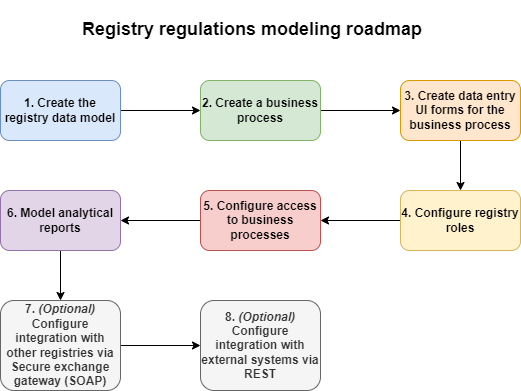

Registry regulations development training course
- 1. Overview
- 2. Getting started
- 3. Registry regulations modeling roadmap
- 4. Study tasks
- 4.1. Create the registry data model
- 4.2. Model a simple business process without integration
- 4.3. Model a business process with integration
- 4.4. Model a business process with a start form and dependent components on forms
- 4.5. Model a business process with multiple participants
- 4.6. Prepare analytical reports
- 4.7. Model a business process with a call to Secure exchange gateway
- 5. Tests
| This document is available in both English and Ukrainian. Use the language toggle in the top right corner to switch between versions. |
This section contains educational and testing materials for developing practical skills when working with registry regulations.
The course consists of a set of training tasks for the regulations administrators to complete one by one, from simple to complex.
Practical assignments are developed to reinforce the learning materials.
1. Overview
1.1. What are registry regulations
Registry regulations are a set of entities collected in a separate Git directory according to a particular structure. Each entity is a folder with a group of files (such as templates, schemas, and configuration files) that perform specific tasks according to the rules within the business processes framework.
| For details, see Registry regulations structure. |
1.2. How are the regulations deployed
Registry regulations deployment is automated by the CI/CD tools. The MASTER-Build-registry-regulations Jenkins pipeline and related pipelines are responsible for deploying the regulations.
| For details, see Digital registry regulations. |
|
Code build applies only to the files that were in the latest commit.
To solve this issue, ensure that the next commit after a failed build contains all the files you previously tried to deploy. Going back to our example, your second commit must include both the UI form file that you patched and the business process schema file that failed to deploy previously. To ensure a file that had no fixable errors gets into the new commit, make minor changes, such as an indent or a space at the end. |
2. Getting started
2.1. Local environment setup
We recommend configuring your local environment to make working with the registry and its entities more convenient. Install the following tools on your machine:
| Tool | Description |
|---|---|
The version control system (VCS) and console enable you to work with Git repositories (Gerrit, GitHub, GitLab) using Git commands. |
|
Integrated development environment (IDE): |
A development environment provides a convenient interface for working with the regulations in the local Gerrit repository. Choose the one you prefer. |
Camunda Modeler, plug-ins, and standard business process extensions |
The Camunda Modeler desktop application enables you to model business processes in BPMN 2.0 notation, import and save process diagrams in .bpmn format, use custom connectors to extend business logic, and more. |
Text editor: |
A good text editor is invaluable when working with source code files used by various extensions. Choose the one you prefer. |
This API development and testing tool provides a convenient environment for creating, sending, testing, and documenting HTTP requests. With Postman, you can easily interact with different APIs, including REST, SOAP, GraphQL, and others. Postman has many valuable features that help developers work with the API more easily, including:
|
|
A powerful tool that provides a convenient interface for managing various types of databases. It is free, open source, and available for use on a variety of operating systems, including Windows, macOS, and Linux. DBeaver supports different types of databases, including well-known systems such as MySQL, PostgreSQL, Oracle, and others. |
|
OpenShift CLI is a tool that enables you to manage various aspects of an OpenShift cluster using a command-line interface. |
2.2. Development tools: work environment
The Control Plane administrative panel allows registry administrators and developers to conveniently access all essential tools from one location.
In the Registries section, locate the Quick Links tab. This tab provides links to the web interfaces of various services, each accompanied by a brief description of its purpose.

|
For a detailed overview of each service, its purpose, and link template, please refer to the Quick links to registry services page. |
3. Registry regulations modeling roadmap
The regulations modeling roadmap shows high-level stages of working with the main elements of the regulations and provides a general context for the registry development and maintenance teams.
|
The diagram shows only the main elements of the regulations. The Platform provides flexible customization options for a wide range of features related to working with the regulationsfor example, modeling excerpts in different formats, configuring notifications through various communication channels, managing registry settings, and so on. |

4. Study tasks
This section goes over the training stages and introduces the practical tasks that the registry regulations developer is required to perform.
4.1. Create the registry data model
- As part of this task, the modeler needs to:
-
-
Create a logical data model and an ERD diagram.
-
Create a physical data model based on the logical model:
-
Create a physical model development plan:
-
Define primary keys for each of the entities.
-
Define secondary keys if the entity has them.
-
Identify mandatory fields.
-
Identify fields or a combination of fields that have unique values.
-
Define the names of tables and fields in Latin characters.
-
-
Create tables and relationships between them.
-
Create search conditions (view tables).
-
Perform initial data load for reference tables.
-
-
Apply the developed model via the regulations.
-
| For details, see Task 1. Modeling registry database structures. |
4.2. Model a simple business process without integration
- As part of this task, the modeler needs to:
-
-
Model a simple business process without integration with the data factory or other registries.
-
Create data entry UI forms for the business process.
-
Define the roles and grant access to the business process.
-
Apply changes to the regulations.
-
| For details, see Task 2. Modeling a business process without integration. |
4.3. Model a business process with integration
- As part of this task, the modeler needs to:
-
-
Model a business process integrated with the data factory.
-
Model business process branches.
-
Model unified steps in the business processes using
Call Activity.
-
-
Model the UI forms for entering data into the business process and configure the
Selectcomponents to retrieve data from the data factory. -
Define the roles and grant access to the business process.
-
Apply changes to the regulations.
-
| For details, see Task 3. Modeling a business process with integration. |
4.4. Model a business process with a start form and dependent components on forms
- As part of this task, the modeler needs to:
-
-
Model a business process that has a start form.
-
Model data entry UI forms with dependent components and an Edit Grid component.
-
Define the roles and grant access to the business process.
-
Apply changes to the regulations.
-
4.5. Model a business process with multiple participants
- As part of this task, the modeler needs to:
-
-
Model a business process that has multiple participants.
-
Model data entry UI forms and configure them using formVariables.
-
Define the roles and grant access to the business process.
-
Apply changes to the regulations.
-
| For details, see Task 5. Modeling a business process with multiple participants. |
4.6. Prepare analytical reports
- As part of this task, the modeler needs to:
-
-
Model an analytics view.
-
Provide access to the analytics view.
-
Create three queries in Redash.
-
Create a dashboard in Redash.
-
Download the archive with the dashboard and unpack it in the regulations.
-
Apply the changes to the remote Gerrit repository.
-
Verify the report in the officer’s portal.
-
| For details, see Task 6. Developing analytical reports. |
4.7. Model a business process with a call to Secure exchange gateway
- As part of this task, the modeler needs to:
-
-
Model one business process.
-
Model 3 data entry UI forms for the business process.
-
Grant access to the business process for corresponding roles.
-
Save the created artifacts to the local Git repository.
-
Apply local changes to the remote Gerrit repository.
-
Check the functionality of the business process.
-
| For details, see study-project/study-tasks/task-7-bp-modeling-trembita-invocation.adoc. |
5. Tests
This section covers the self-assessment tests you can take after completing the learning part of the training. Tests go from simple to complex.